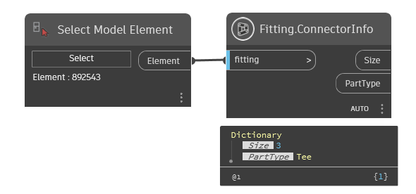
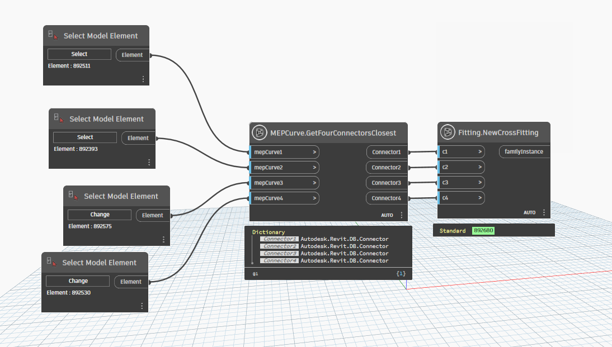
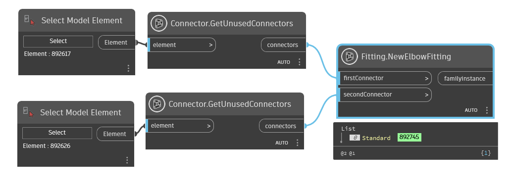
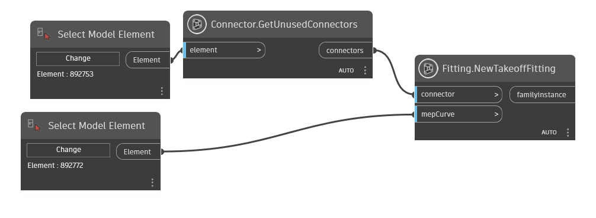
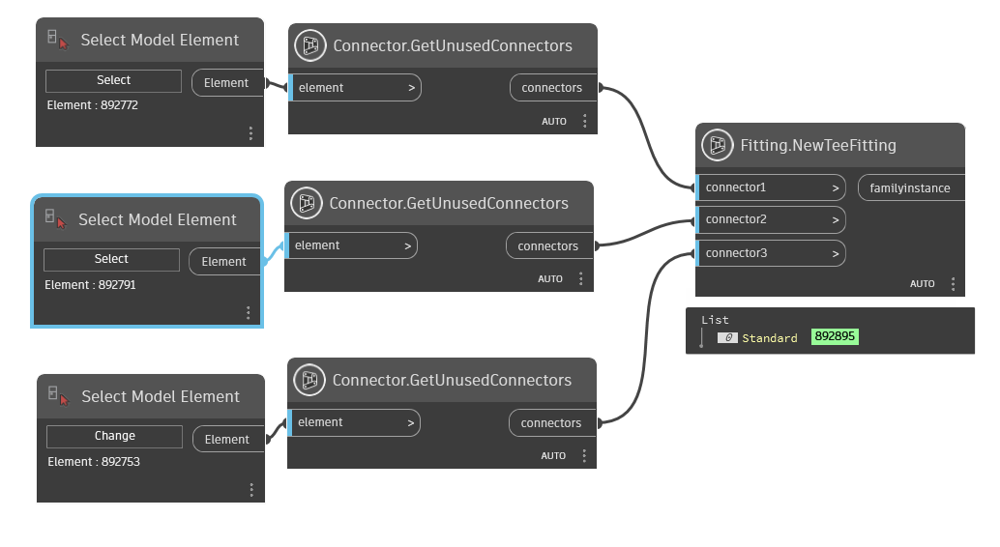
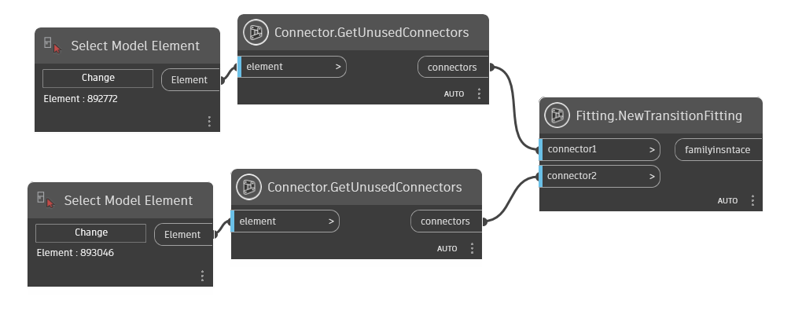
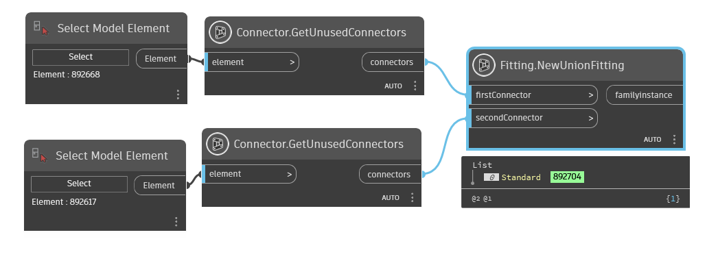
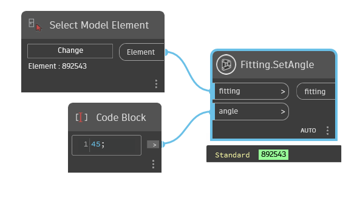
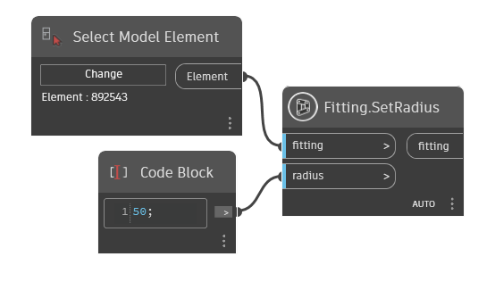

Class Fitting
- Namespace
- OpenMEP.Element
- Assembly
- OpenMEP.dll
This object represents a single instance of a family type, such as a single I beam.
public class Fitting- Inheritance
-
Fitting
- Inherited Members
Remarks
Examples of FamilyInstance objects within Autodesk Revit are Beams, Columns, Braces and Desks. The FamilyInstance object provides more detailed properties that enable the type of the family instance to be changed, thus changing their appearance within the project.
Methods
ConnectorInfo(Element)
return information connector of fitting
[MultiReturn(new string[] { "Size", "PartType" })]
[NodeCategory("Query")]
public static IDictionary ConnectorInfo(Element fitting)Parameters
fittingElementfamily instance
Returns
Examples

NewCrossFitting(Connector, Connector, Connector, Connector)
Add a new family instance of a cross fitting into the Autodesk Revit document, using four connectors.
[NodeCategory("Create")]
public static Element? NewCrossFitting(Connector connector1, Connector connector2, Connector connector3, Connector connector4)Parameters
connector1ConnectorThe first connector to be connected to the cross.
connector2ConnectorThe second connector to be connected to the cross.
connector3ConnectorThe third connector to be connected to the cross.
connector4ConnectorThe fourth connector to be connected to the cross
Returns
- Element
If creation was successful then an family instance to the new object is returned, and the transition fitting will be added at the connectors' end if necessary, otherwise an exception with failure information will be thrown.
Examples

NewElbowFitting(Connector, Connector)
Add a new family instance of an elbow fitting into the Autodesk Revit document, using two connectors.
[NodeCategory("Create")]
public static Element? NewElbowFitting(Connector firstConnector, Connector secondConnector)Parameters
firstConnectorConnectorThe first connector to be connected to the union.
secondConnectorConnectorThe second connector to be connected to the union.
Returns
- Element
If creation was successful then an family instance to the new object is returned, otherwise an exception with failure information will be thrown.
Examples

NewTakeoffFitting(Connector, Element)
Add a new family instance of an takeoff fitting into the Autodesk Revit document, using one connector and one MEP curve.
[NodeCategory("Create")]
public static Element? NewTakeoffFitting(Connector connector, Element mepCurve)Parameters
connectorConnectorThe connector to be connected to the takeoff.
mepCurveElementThe duct or pipe which is the trunk for the takeoff.
Returns
- Element
new takeoff
Examples

NewTeeFitting(Connector, Connector?, Connector?)
Add a new family instance of a tee fitting into the Autodesk Revit document, using three connectors.
[NodeCategory("Create")]
public static Element? NewTeeFitting(Connector connector1, Connector? connector2, Connector? connector3)Parameters
connector1ConnectorThe first connector to be connected to the tee
connector2ConnectorThe second connector to be connected to the tee.
connector3ConnectorThe third connector to be connected to the tee. This should be connected to the branch of the tee.
Returns
- Element
If creation was successful then an family instance to the new object is returned, and the transition fitting will be added at the connectors' end if necessary, otherwise an exception with failure information will be thrown
Examples

NewTransitionFitting(Connector, Connector)
Add a new family instance of an transition fitting into the Autodesk Revit document, using two connectors.
[NodeCategory("Create")]
public static Element? NewTransitionFitting(Connector connector1, Connector connector2)Parameters
connector1ConnectorThe first connector to be connected to the transition.
connector2ConnectorThe second connector to be connected to the transition.
Returns
- Element
new transition
Examples

NewUnionFitting(Connector, Connector)
Add a new family instance of an union fitting into the Autodesk Revit document, using two connectors.
[NodeCategory("Create")]
public static Element? NewUnionFitting(Connector firstConnector, Connector secondConnector)Parameters
firstConnectorConnectorThe first connector to be connected to the union.
secondConnectorConnectorThe second connector to be connected to the union.
Returns
- Element
If creation was successful then an family instance to the new object is returned, otherwise an exception with failure information will be thrown.
Examples

SetAngle(Element?, double)
Set Angle of tee fitting
[NodeCategory("Action")]
public static Element? SetAngle(Element? fitting, double angle)Parameters
fittingElementfitting need to change angle
angledoubleangle to set (degrees)
Returns
- Element
fitting
Examples

Remarks
this function just apply for tee have two connector
SetRadius(Element?, double)
Set radius of fitting
[NodeCategory("Action")]
public static Element? SetRadius(Element? fitting, double radius)Parameters
fittingElementfitting will be set
radiusdoublevalue radius
Returns
- Element
fitting
Examples
